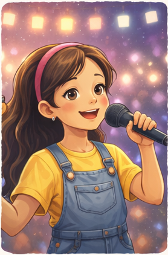

Valentina Rojas
CantoEdad: 15 años
Valentina descubrió su pasión por el canto participando en actividades escolares y presentaciones artísticas. Desde entonces, ha trabajado en mejorar su técnica vocal y expresión escénica, logrando destacar por su voz clara y emotiva. Disfruta interpretar distintos géneros musicales y conectar con el público a través de sus presentaciones. En el futuro, aspira a formarse profesionalmente en música, participar en escenarios más grandes y desarrollar una carrera artística que le permita transmitir emociones a través de su voz.
Volver